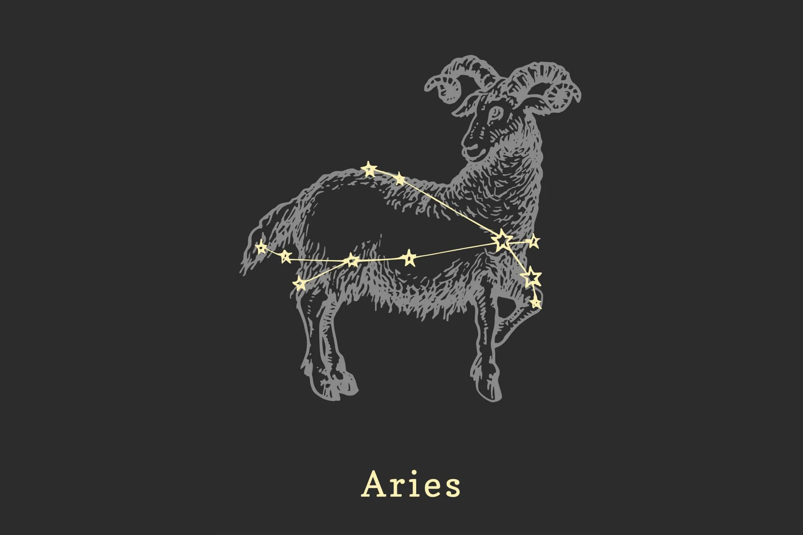

Zodiac Signs
Aries

Bold, pioneering and courageous, Aries is the leader of the zodiac. They are daring and adventurous and are unafraid to strike out into unknown territory where others would be unable to go. An eternal child at heart, Aries are energetic and aggressive, filled with an enthusiasm for life. They can be quick to anger, but also just as eager to laugh and move on. These people tend to be ambitious, active and honest, eager to open themselves up to every one of life’s possibilities. Aries are independent and enjoy sharing their fiery personalities with the world.
|
Taurus

Sensual, determined and loyal, Tauruses value security and stability above all. They enjoy the finer things in life and are attracted to the full exploration of the senses. They are drawn to beauty and pleasure and invest themselves entirely in what they believe in. These people are especially hard-working and like to take a practical approach to life. This often leads them to be excellent with money and attract it to them like a magnet once they focus their skills and talents. This perseverance infuses their entire lives — as they are also romantics who seek long-term love and pleasant relationships. However, Tauruses are very resistant to change, which can make them very stubborn to alter their points of view. Ultimately, though, they are warm and gentle and extremely dependable people.
|
GEMINI

Quick-witted, excitable and inquisitive, Geminis are curious about everything. They take a highly intellectual view of the world, ready to learn about everything and everyone. As master communicators, they are gifted at being flexible and versatile in connecting with others. Represented by the twins, they may have two sides to their personalities, though one they show the world, and one they keep hidden. They process things through their minds, rather than just their emotions, which makes them extremely adaptable to every situation.
|
CANCER

Sensitive, emotional and receptive, Cancers often put their hearts fully into anything they believe in. However, represented by the crab, they have a hard shell to crack before you can get to their softest side. These people also tend to be especially nurturing, valuing domesticity and family greatly. Building a stable and safe home is important, as they need a great deal of time to recharge their batteries. Cancers are also known to be especially moody and temperamental, though, as they are heavily impacted by the people, energy and situations that surround them.
|
LEO

Creative, enthusiastic and dramatic, Leos love to live life to the fullest. They tend to have an innate confidence and radiance that gives them the ability to easily assert themselves and stand out from the crowd. They often like to be recognized for everything they bring to the world, sometimes to the point of pride or arrogance. Despite this, Leos are extremely loyal, romantic and artistic, called to express the fire inside of them vividly. With very big hearts, they can also be quite generous to those who they deem worthy of their affections.
|
VIRGO

Practical, hardworking and analytical, Virgos are immensely talented at assessing the details of any situation and finding solutions to problem-solve them. They are natural-born organizers and value consistency, loyalty and productivity. They invest very much of themselves into their goals and plans but can become very critical if things do not develop as they had originally expected. This perfectionism is something that can grow into an obsession. However, because of their tenacity and intellectualism, they are usually able to create order out of chaos no matter what. Ultimately, Virgos are kind, grounded and trustworthy people — happy to help anyone they love who needs it.
|
LIBRA

Charming, social and diplomatic, Libras value peace and balance above all. They strive for fairness in life and in their relationships. They also have a natural tendency to surround themselves with beauty and luxury. Also, as eternal romantics, they crave relationships and partnerships and will dive into union headfirst when they find someone they admire deeply. However, this can at times lead them into codependency. Gifted in communication, Libras are also excellent negotiators. They tend to process their feelings intellectually but are also deeply sensitive people. This can sometimes lead them to be indecisive, as they do everything possible to avoid conflict.
|
SCORPIO

Intense, passionate and cunning, Scorpios are “all or nothing” kinds of people. They have a natural ability to enchant others, utilizing their powerful minds and auras to dominate situations and relationships. Deeply emotional, they can brood in the extremes of their feelings. Craving intimacy and psychological depth above all, they navigate the world like a game in order to win and conquer whatever they set their sights upon. With an irresistible quality, Scorpios can be quite secretive, sexual and subtle. They also tend to be very fixed in their ways — unrelenting until they get what they want. While this intensity may seem shocking, Scorpios actually value transformation and rebirth through their heart regardless if a situation proceeds for better or for worse.
|
SAGITTARIUS

Adventurous, spontaneous and optimistic, Sagittarians crave expansion and exploration above all. They refuse to be caged and hunger for everything that life has to offer them. They tend to be sojourners, seeking new ideas, relationships and experiences that will teach them more about themselves and the world. However, with such an impulsive and restless nature, they may find that it is hard to focus on one thing or that they fear commitment or responsibility. Sagittarians were born to be free, and this cheerful energy often brings them a natural form of luck.
|
CAPRICORN

Ambitious, reserved and patient, Capricorns desire to build a life that has a solid foundation. This most often leads them to become especially hardworking, focused on creating career and financial success. However, they just as equally value strong long-term relationships and a domestic life that also feel like personal achievements. These people are disciplined and determined, but sometimes to the point of austerity. Because of their own sense of practicality, they may actually be less emotional than others, unwilling to be distracted by feelings when it is easier to face facts. Yet, despite this all, Capricorns tend to have a solid sense of humor in order to better connect with others.
|
CAPRICORN
Intellectual, independent and contemplative, Aquarians are often deeply focused on their beliefs and ideas. They are hungry for knowledge in order to better establish their firm perception on how the universe and society operate around them. Open to exploring new concepts, once they have found their core analysis, they will not waver from their point of view. On one hand, this can bring them a sense of brilliance for exploring more about life and people but, on the other, it can just as easily make an Aquarian stubborn and close-minded in the end. Aquarian people are especially social. They like to present themselves as unique, eccentric and inventive — different from the crowd.
|
PISCES

Imaginative, intuitive and emotional, Pisces are often old souls. They have an innate connection to the mystical and spiritual world, often drawn to deeply romantic, creative or transformative experiences. They are especially compassionate and sensitive, often putting the needs of others before themselves. They are excellent friends, enjoying a vivid social life filled with many unique people. Highly empathic, they can tune into energy that most other people ignore. However, because of the amount of information they are sometimes receiving, this can cause them to become overwhelmed or impressionable to others. Once this takes place, Pisceans tend to finally break free to swim along onto a new journey, forever unafraid to recreate themselves.
|